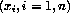
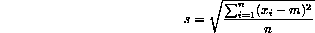

Write a program which contains an internal function which returns the standard deviation from the mean of an array of real values (make all variables visible to the internal procedure by host association). Note that if the mean of a sequence of values  is denoted by m then the standard deviation, s, is defined as:

To demonstrate correctness print out the standard deviation of the following numbers (10 of 'em):
5.0 3.0 17.0 -7.56 78.1 99.99 0.8 11.7 33.8 29.6
and also for the following 14,
1.0 2.0 3.0 4.0 5.0 6.0 7.0 8.0 9.0 10.0 11.0 12.0 13.0 14.0